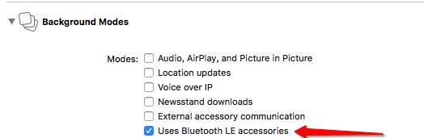
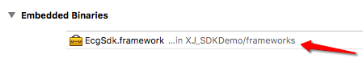

iOS SDK概述
SDK概述
SDK说明
-
版本支持
- iOS 操作系统要求8.0（包含）以上。
- 蓝牙设备要求遵守4.0协议。
SDK集成
请参考以下文档与教程，来集成 IOS SDK。
iOS SDK集成指南
SDK组成
-
SDK文件目录
-
头文件 XJ_EcgSdk.h
-
静态库文件 XJ_EcgSdk.framework
-
Xcode配置
-
后台运行权限配置

-
静态库引用配置

功能代码集成
-
申请第三方信息
通过联系熙健以邮件形式申请第三方信息。
-
初始化SDK
-
引用头文件
#import <XJ_EcgSdk/XJ_EcgSdk.h> -
注册机构信息
-(void)SDKRegiterName:(NSString *)name other_id:(NSString *)other_id app_name:(NSString *)app_name User_Org_Name:(NSString *)User_Org_Name full_name:(NSString *)full_name sex:(NSString *)sex age:(NSString *)age phone:(NSString *)phone card_no:(NSString *)card_no mail:(NSString *)mail address:(NSString *)address medical_type:(NSString *)medical_type callback:(void(^)(REGISTER_MSG))callback;
-
-
基本功能集成
1 登录SDK
-(void)SDKLogWithOther_id:(NSString *)other_id callback:(void (^)(LOGIN_MSG))callback;2 设置蓝牙连接代理
//连接设备 -(void)SocketConnected //设备初始化失败 -(void)deviceNotReady:(int)msg sn:(NSString *)sn //设备初始化成功 -(void)deviceReadyWithSN:(NSString *)SN EcgSample:(uint16_t)EcgSample hasInit:(bool)hasInit //发现蓝牙设备 -(void)bluetoothFoundPeripheral:(CBPeripheral *)peripheral RSSI:(NSNumber *)RSSI } //蓝牙开启 -(void)bluetoothPowerOn //蓝牙关闭 -(void) bluetoothPowerOff3 设置蓝牙记录代理
//注册蓝牙代理 -(void) setSdkDeviceMessage:(id <XJ_DeviceMessage>) message;4 设置记录数据代理
//返回记录数据，可用于生成.ecg文件 -(void) ecg:(int16_t)data len:(int) len; //返回节率 -(void)rr:(int)ms //返回心率数值 -(void) heartRate:(int) hr5 设置初始化心电图
//心电图 -(void)setEcgBrowser:(XJRealTimeEcgBrowser *)browser6 开始记录和结束记录
//开始记录 -(void)startRecord; //结束记录 -(void)endRecord; -
高级功能集成
-
滤波器功能
//设置基线修正 -(void)setOpenBaseLineRebuild:(bool)open //0.5hz 滤波器 （鉴于录波器影响比较大,建议不用同时开启俩滤波器） -(void)setLpPointFivehz:(bool)open; -
延迟出心电图
//设置开始记录倒计时延迟时间 -(void)setCountdownTime:(u_long)millisecond; -
生成心电报告图片
-(void)testWithEcg:(id)ecg ecgSampleHz:(int)ecgSampleHz duration:(uint64_t)time recordTime:(NSString *)recordTime name:(NSString *)name gender:(NSString *)gender age:(int)age averageHeartRate:(int)averageHeartRate ImageWidth:(float)imageWidth ImageHeight:(float)imageHeight complete:(void(^)(UIImage *image))complete
-
技术支持
- 技术支持QQ群：552491146
iOS SDK调试指南
确认第三方信息
- 检验工程中第三方信息与申请获得的信息是否一致
API验证
- 注册登录第三方信息相关
- 检验登录是否成功
- 检验注册SDk是否成功
- 开始记录相关
- 检验是否出心电图
- 高级功能相关
- 检验高级功能是否起作用
其他问题验证
- 硬件连接不稳定
- 检验设备是否连接成功（通过硬件设备的闪烁灯）
- 网络因素不稳定
- 检验网络的可用性
iOS SDK API
API介绍
-
配置信息
/** 配置信息 @param APPId 熙健提供 @param APP_Org_Id 熙健提供 @param OrgParam 系统获取 */ -(void)setOrgWithAPPId:(NSString *)APPId APP_Org_Id:(NSString *)APP_Org_Id OrgParam:(NSString *)OrgParam; -
注册
sdk只检查UserInfo必要参数不能为空，由服务器端检查合法性。 @param name 姓名 @param other_id id @param app_name app名称 @param User_Org_Name 用户机构信息 @param full_name 全名 @param sex 性别 @param age 年龄 @param phone 手机号码 @param card_no 身份证号 @param mail 邮箱 @param address 地址 @param medical_type 病史 @param callback 回调 typedef NS_ENUM(NSUInteger, REGISTER_MSG) { REGISYER_SUCCESS,//注册成功 REGISTER_FAIL_NO_RESPOND,//服务器无响应 REGISTER_FAIL_USER_EXIST,//用户已存在可以直接登陆 REGISTER_FAIL_NO_NET,//无网络连接 REGISTER_FAIL_OSDK_INIT_ERROR,//OSDK 未初始化 REGISTER_FAIL_USER_INFO_EMPTY,//用户信息不完整（缺少必填项目，包含sdk0） REGISTER_FAIL_USER_INFO_ERROR,//参数不正确，如必填项为空或长度或格式不正确 REGISTER_SYS_0,//系统错误 REGISTER_SYS_USER_EXIST_E,//OpenId已存在，但是已失效（OpenId不可重复用）（sdk5） REGISTER_SYS_THIRD_PARTY_ID_CHECKING,//thirdPartyId 存在，正在审核中～ REGISTER_SYS_APP_ID_CHECKING,//appId 存在，正在审核中～ REGISTER_SYS_APP_PACKAGE_ID_NOT_EXIST,//appPackageId 不存在 REGISTER_SYS_APP_ID_ERROR,//appId不存在 或者appId 公司id 不匹配 REGISTER_SYS_THIRD_PARTY_ID_NOT_EXIST,//thirdPartyId 不存在 REGISTER_SYS_LOW_VERSION,//版本低，需要升级sdk REGISTER_SYS_UNAUTHORIZED,//未授权 REGISTER_SYS_ACCOUNT_FREEZE,//账户冻结 REGISTER_SYS_BUNDLEID_NOT_MATE,//bundle不匹配 } -(void)SDKRegiterName:(NSString *)name other_id:(NSString *)other_id app_name:(NSString *)app_name User_Org_Name:(NSString *)User_Org_Name full_name:(NSString *)full_name sex:(NSString *)sex age:(NSString *)age phone:(NSString *)phone card_no:(NSString *)card_no mail:(NSString *)mail address:(NSString *)address medical_type:(NSString *)medical_type callback:(void(^)(REGISTER_MSG))callback; -
登录
1.已经注册用户，登陆。登陆是记录数据开始的前置条件。 2.sdk登陆支持离线使用，上次登陆过的用户可以在无网络时登陆使用。 @param other_id 注册时的id @param callback 回调 typedef NS_ENUM(NSUInteger, LOGIN_MSG) { LOGIN_SUCCESS,//登录成功 LOGIN_FAIL_NO_RESPOND,//服务器无响应 LOGIN_FAIL_NO_USER,//无此用户 Openid 不存在 LOGIN_FAIL_NO_NET,//无网络连接 LOGIN_FAIL_NO_OPENID,//OID 参数为空 LOGIN_FAIL_OSDK_INIT_ERROR,//OSDK 未初始化 LOGIN_SYS_0,//系统错误 LOGIN_SYS_USER_EXIST_E,//OpenId已存在，但是已失效（OpenId不可重复用）（sdk5） LOGIN_SYS_THIRD_PARTY_ID_CHECKING,//thirdPartyId 存在，正在审核中～ LOGIN_SYS_APP_ID_CHECKING,//appId 存在，正在审核中～ LOGIN_SYS_APP_PACKAGE_ID_NOT_EXIST,//appPackageId 不存在 LOGIN_SYS_MISSING_PARAMETERS,//缺少参数user_id,app_org_id 或 app_id LOGIN_SYS_APP_ID_ERROR,//appId不存在 或者 appSecret 有错误 TODO 修正为： 包名 appId 公司id 不匹配 LOGIN_SYS_THIRD_PARTY_ID_NOT_EXIST,//thirdPartyId 不存在 LOGIN_SYS_LOW_VERSION,//版本低，需要升级sdk LOGIN_SYS_UNAUTHORIZED,//未授权 LOGIN_SYS_ACCOUNT_FREEZE,//账户冻结 LOGIN_SYS_BUNDLEID_NOT_MATE,//bundle不匹配 } -(void)SDKLogWithOther_id:(NSString *)other_id callback:(void (^)(LOGIN_MSG))callback; -
蓝牙连接相关
/** 蓝牙开启 */ -(void) bluetoothPowerOn; /** 蓝牙关闭 */ -(void) bluetoothPowerOff; /** 蓝牙扫描 */ -(void) BLEscan; /** 断开蓝牙 */ -(void) Ble_disconnect; /** 是否连接蓝牙 @return 是否连接 */ -(BOOL) Ble_isConnect; /** 停止扫描蓝牙 */ -(void) BLEstopScan; /** 发现蓝牙设备 @param peripheral 蓝牙对象 @param RSSI rssi */ -(void) bluetoothFoundPeripheral:(CBPeripheral *)peripheral RSSI:(NSNumber *)RSSI; /** 丢失蓝牙设备 */ -(void) SocketLost; /** 设备已连接成功 */ -(void) SocketConnected; /** 重连中 @param count 当前秒数 @param max 设置的重连秒数 / -(void) SocketConnectCount:(int) count max:(int) max; /** 连接设备成功后返回的回调 @param SN 设备号 @param EcgSample 采样率 @param hasInit 初始化成功标志 */ -(void) deviceReadyWithSN:(NSString *)SN EcgSample:(uint16_t)EcgSample hasInit:(bool)hasInit; /** 设备初始化未成功 @param msg 0、不支持导联 1、不支持序列号 sn:设备序列号 @param sn 设备序列号 */ -(void) deviceNotReady:(int) msg sn:(NSString*) sn; -
记录相关
/** 设备消息，设置回调 */ -(void)setSdkDeviceMessage:(id <XJ_DeviceMessage>) message; /** * 设置记录消息，设置回调 * * @param message <#message description#> */ -(void)setSdkRecordMessage:(id<XJ_RecordMessage>)message; /** * 设置实时心电图 */ -(void)setEcgBrowser:(XJRealTimeEcgBrowser *)browser; /** 开始记录 */ -(void)startRecord; /** 结束记录 */ -(void)endRecord; /** 开始记录失败 @param msg 失败枚举 */ typedef NS_ENUM(int16_t, RECORD_FAIL_MSG) { RECORD_FAIL_DEVICE_NO_RESPOND,//设备未响应发送数据指令 RECORD_FAIL_DEVICE_NOT_READY,//未发现有效设备连接 RECORD_FAIL_OSDK_INIT_ERROR,//OSDK 未初始化 RECORD_FAIL_A_RECORD_RUNNING,//已经有一个Record实例运行 RECORD_FAIL_NOT_LOGIN,//未登陆 RECORD_FAIL_PARAMETER,//记录参数异常 RECORD_FAIL_LOW_VERSION,//版本低，需要升级sdk RECORD_FAIL_MISS_PARAMETER,//缺失参数 RECORD_FAIL_AUTH_FAILED,//验证厂商失败 RECORD_FAIL_ACCOUNT_FREEZE,//账户冻结 RECORD_FAIL_BUNDLEID_NOT_MATE,//bundleID不匹配 RECORD_FAIL_UNKNOW,//未知错误 }; -(void) startFailed:(RECORD_FAIL_MSG) msg; /** 节律回调 @param ms 节律数值 */ -(void) rr:(int) ms; /** 心率回调 @param hr 心率数值 */ -(void) heartRate:(int) hr;//bmp /** 返回记录数据，可用于生成.ecg文件 @param data 心率数据 @param len 导联数 */ -(void) ecg:(uint16_t)data len:(int) len; /** 记录开始后的回调 */ -(void) recordStart; /** 记录开始时间 @param second 时间 */ -(void) recordTime:(int) second; /** 记录结束回调 */ -(void) recordEnd; /** 结束记录后返回分析结果 @param averageHeartRate 平均心率 @param normalRange 正常范围 @param suspectedRisk 异常范围 */ -(void) recordStatistics:(int) averageHeartRate normalRange:(int) normalRange suspectedRisk:(int) suspectedRisk; /** 返回加速度 X、Y、Z代表物体的3轴坐标，范围+/-2G，有效位共10bit，发送为加速度传感器的原始数据 */ -(void)addAccData:(int16_t)x y:(int16_t)y z:(int16_t)z; /** 返回电池电量 @param value 返回0-3，0代表没有电了，3代表满电 */ -(void)addBattery:(int)value;
iOS SDK FAQ
FAQ集合
- 在后台测量出现bug时，需要查看支持后台运行开关是否打开。
- 导入头文件找不到时，查看静态库路径是否正确。
- 其他问题，请加入技术支持群552491146咨询工程师。